Lecture 06 · 21 slides · September 3, 2026
More Attention: the variants that make it fit.
Standard attention lets every token compare itself with every other
token, which means building an n-by-n score matrix at
every layer. Doubling the context therefore quadruples the work. This
lecture covers two responses: compute fewer pairs with sliding, sparse,
or BigBird attention, or avoid materializing the matrix with linear attention.
Lecture 06
21 slides
Manish Shrivastava · Aparajitha Allamraju
§0The deck at a glance
The lecture begins with the quadratic cost of standard attention, then
compares sliding, sparse, and BigBird masks. The final section changes
the attention computation itself to make cost linear in sequence length.
For each method, track the mask, KV-cache cost, and what the efficiency
gain gives up.
§1The O(n²) problem
The two slides that frame the whole lecture. Slide 1 is the title
card; slide 2 is a small but load-bearing list of what standard
attention costs you.
Slide 01 / 21
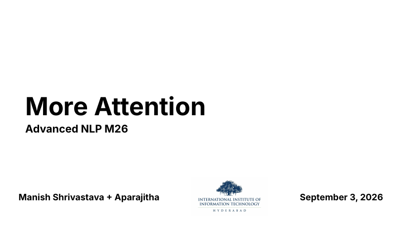
slide 01 · title
On the slide
Lecture 6 of Advanced NLP, Monsoon 2026. The title More Attention is a promise: you already know one attention (the one from Lecture 5). Now you get four more, each one designed to fix something that scaled dot-product attention is bad at.
What to take from it
The transformer's ubiquity is partly an accident of hardware. Attention was picked in 2017 because it parallelised on GPUs. Its quadratic cost in the sequence length was tolerated back then because sequences were short (128 to 512 tokens). The moment people wanted 32k, 128k, or 1M-token contexts, that quadratic became the bottleneck of the entire field. This lecture is how the field responded.
Slide 02 / 21
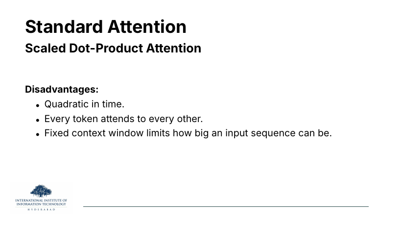
slide 02 · why standard attention hurts
On the slide
Three disadvantages of scaled dot-product attention, the operation from Lecture 5 that computes
. The three complaints are linked, not independent.
What to take from it
The middle bullet, every token attends to every other, is the cause; the other two are symptoms. If every one of n queries dot-products against every one of n keys, you build an n×n matrix. That matrix takes
arithmetic and memory. So you cannot afford long n, and that is where the "fixed context window" ceiling comes from.
✦ Key takeaway
Every variant in the rest of the lecture is a way of saying no, my query does not need to look at every key. Sliding attention says "only my neighbours." Sparse says "only a striped subset." BigBird says "neighbours plus a few globals plus a bit of random." Linear says "look at all of them, but through a factorisation that never materialises the matrix." Same disease, four different medicines.
→ Background
The disease itself is introduced in Lecture 5. If any symbol here (Q, K, V, softmax, KV cache) is unfamiliar, go back and skim slides on scaled dot-product attention before continuing.
§2Sliding-window attention: attend to your neighbours
The simplest fix. Instead of letting a query look at all n
keys, let it look only at a window of w keys centred on
itself. The mask stops being a full square and becomes a thin band
down the diagonal. This is the idea behind
Longformer (Beltagy, Peters, and Cohan, 2020),
the first paper to make long-document transformers practical.
Slide 03 / 21
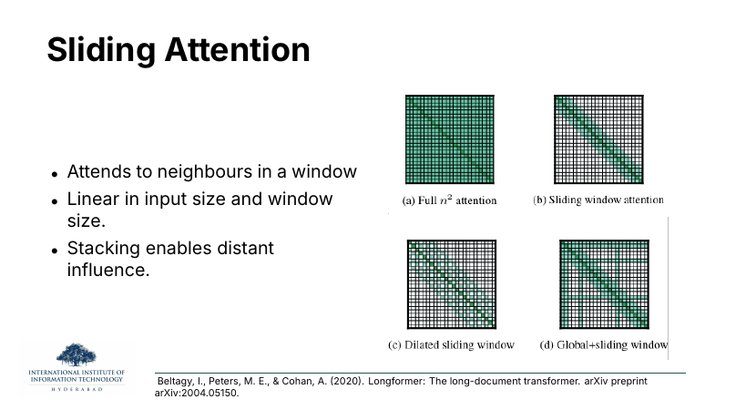
slide 03 · Longformer's four patterns
On the slide
Four attention masks from the Longformer paper. In each, the axes are query index (rows) and key index (columns), and green cells are the (query, key) pairs that are actually computed:
- (a) Full n² attention. The standard mask, a solid green square. Everyone looks at everyone.
- (b) Sliding window. A thin diagonal band of width w. Each query attends to w/2 tokens on either side.
- (c) Dilated sliding window. The same band, but with gaps: skip every other key. This widens the receptive field without adding cost, the same trick that WaveNet uses in dilated convolutions.
- (d) Global plus sliding. The band, plus a few full rows and columns for global tokens (typically
[CLS] or question tokens) that every position attends to and that attend to everything.
What to take from it
Instead of an n×n matrix, you keep an n×w band. Cost drops from
to
,
which is linear in n when w is fixed. And the third bullet, "stacking enables distant influence", is the honest defense of this design: a token can only reach w/2 neighbours in one layer, but after L layers its receptive field is L·w/2, so with enough depth it can still influence a distant token indirectly, the way information flows across a CNN.
⚙ How it works
Every family in this lecture reduces to which cells of the attention matrix do I actually compute. Sliding attention is the case where the answer is a band of width w. All the arithmetic tricks follow from that mask.
Slide 04 / 21
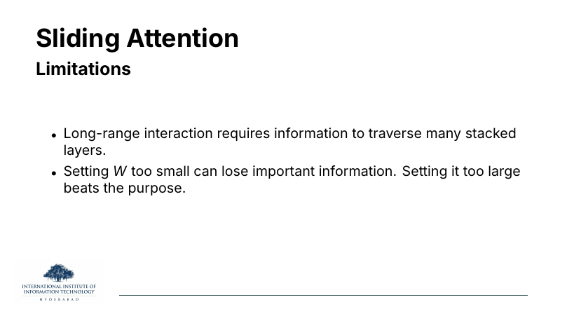
slide 04 · sliding limitations
On the slide
The honest downsides. Two of them.
What to take from it
The first is the CNN problem in disguise: to relate token 1 to token 10 000 you need
layers of message-passing. Depth is not free.
The second is a tuning trap. Small w and you drop important long-range signal; large w and you are back paying for something close to full attention.
Slide 05 / 21
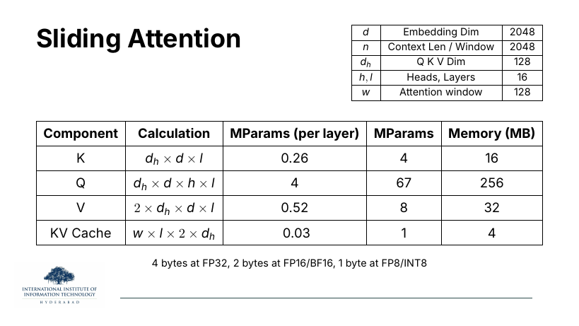
slide 05 · sliding memory table
On the slide
A worked memory table for a reference model: 2048-dim embeddings, 16 heads, 16 layers, and a window of w = 128 tokens. The KV cache row is the punchline: because each layer only needs to remember the last w keys/values, the cache is
per token: a fixed 4 MB, not a growing quantity.
Why the KV cache row matters
The KV cache is what a decoder keeps in GPU memory during generation so that the next token can attend to the past without recomputing keys and values. In standard attention it grows linearly with the number of generated tokens; here it is capped at w. That is the practical reason people ship sliding attention: it makes inference at 100k tokens fit on one card.
§3Sparse attention: attend to a chosen few
Sliding is one way to sparsify, but it is not the only pattern that
works. Slide 6 introduces the Sparse Transformer of Child
et al. (2019), which keeps a small stride of long-range
connections in the mask. Slide 8 fast-forwards to DeepSeek-v3.2's
idea: rather than fix the sparsity pattern, learn which past
tokens are worth keeping, per query.
Slide 06 / 21
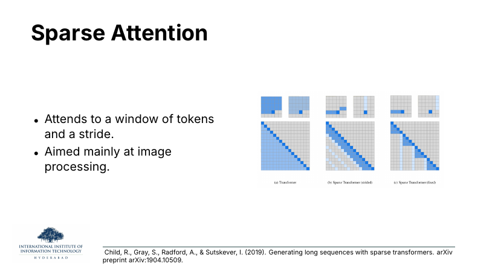
slide 06 · Child et al. sparse patterns
On the slide
Three masks from the Sparse Transformers paper. The full pattern (left) is compared to two structured sparsifications. Strided: attend to your local window and every k-th token in the past. Fixed: attend to your window and to a fixed set of "summary" positions.
What to take from it
The design intent was image generation: the paper factorises attention into two heads that between them cover the full 2D image raster in
instead of
.
One head handles the local neighbourhood; the other jumps a fixed stride so that after two hops any pixel can reach any other.
→ where the note comes from
"Aimed mainly at image processing" is a historical note. Pixel neighbourhoods have strong local structure and a natural stride (row width), which is exactly what strided sparse patterns exploit. For text the payoff is smaller, and that is one reason BigBird added random links on top.
Slide 07 / 21
slide 07 · sparse memory (fixed w)
On the slide
The same reference model as slide 5. The parameter columns don't change: the projections Q, K, V are the same whatever the mask does. What changes is the KV cache, still ~4 MB per position because each query only needs its window of past keys and values in fast memory.
Why the tables look almost identical
These memory tables recur through the lecture on purpose. Each family costs roughly the same in parameters; the differences are in the cache and in the arithmetic per step. The savings come from what you don't compute, not from what you don't store as weights.
Slide 08 / 21
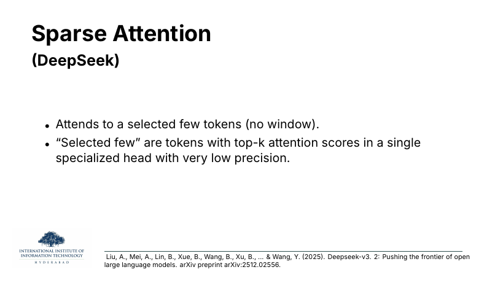
slide 08 · DeepSeek top-k selection
On the slide
DeepSeek-v3.2's contribution to sparse attention. There is no window at all. For each query, a tiny specialised "index" head (run at very low precision to keep it cheap) scores all past tokens; only the top-k highest scorers get promoted to full-precision attention.
What to take from it
Fixed masks (windows, strides) are a guess about where attention wants to look. DeepSeek's move is to ask, cheaply, then look only at the winners. This is a form of learned sparsity: the mask is dynamic, per-query, per-layer.
⚙ How it works
Think of it as a two-stage attention. Stage 1: a lightweight, low-precision "lightning attention" scores every past token; this is cheap because the scores are approximate and never fed to softmax. Stage 2: sort those scores, take the top k, and do real attention over just those k. Total cost is roughly
plus the cheap indexing pass.
Slide 09 / 21
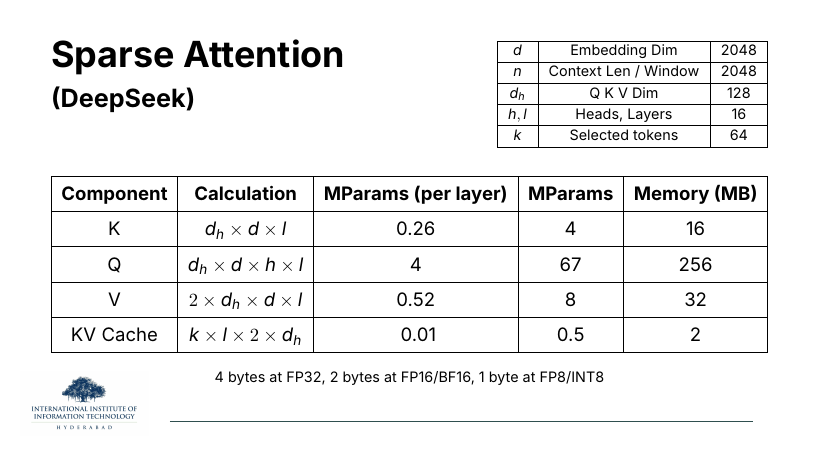
slide 09 · DeepSeek memory (selected k)
On the slide
Same reference model as before, with one changed row in the parameter table: k = 64 selected tokens per query. The KV cache is now
,
which is 2 MB per position, half of what a sliding window of 128 costs.
Why keep this in mind
Fewer tokens attended to means less to keep in cache and less arithmetic. The reason DeepSeek can afford k = 64 while sliding needed w = 128 is that the 64 are chosen adaptively. You spend your budget on the tokens the query actually cares about, not on whichever tokens happen to sit next to it.
Slide 10 / 21
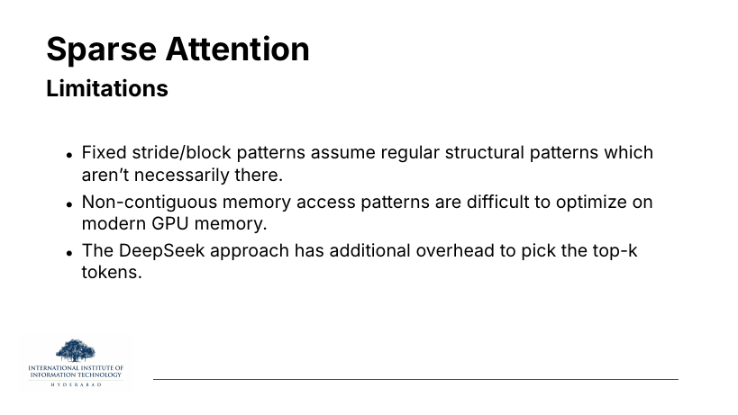
slide 10 · sparse limitations
On the slide
Three complaints about the sparse family. Read them as three different failure modes.
The idea behind each
- Structural mismatch. Strided and block patterns assume the interesting relationships in the sequence happen at fixed offsets. In images that is (roughly) true; in prose, not always. A sparse pattern that's wrong for your task simply hides the tokens you needed.
- GPU-unfriendly memory access. Modern GPUs love coalesced reads: long, contiguous stretches of memory. A mask that says "grab keys 3, 47, 512, 5013" turns every attention step into a scatter/gather pattern that is much slower than its FLOP count would suggest.
- Selection overhead. DeepSeek's dynamic mask is not free. You pay for the low-precision indexing head and for the top-k sort. If k is small enough this pays back, but the crossover point is real.
⚠ Watch out
People quote FLOPs for sparse attention and it looks like a huge win. Then they benchmark on an actual GPU and the wall-clock is only marginally better. The second bullet is why. On A100/H100 hardware, contiguous memory access matters as much as arithmetic count.
§4Hybrid attention: BigBird's three-in-one mask
BigBird (Zaheer et al., 2020) is the answer to a natural
question: if sliding is good for local context and a few global
tokens are good for propagating summary information, why not stack
both, and sprinkle in a bit of randomness for good measure? The
three components combine into a mask that is still
but that provably approximates full attention.
Slide 11 / 21
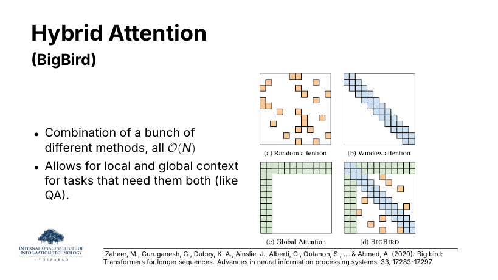
slide 11 · BigBird = window + global + random
On the slide
The three building blocks and their combination:
- (a) Random attention. Each query attends to r random past positions.
- (b) Window attention. The familiar sliding band.
- (c) Global attention. A small set of designated tokens that see everything and are seen by everything (the L-shaped green frame).
- (d) BigBird. All three composed into one mask.
What to take from it
Each pattern is
on its own; their union is still
.
The window gives you the local structure that words in a sentence share; the global tokens give you the CLS/question hub through which any two positions can reach each other in two hops; the random links give the graph the small-world property that makes the whole thing a good approximation to full attention. The paper proves BigBird is a universal approximator of sequence functions and is Turing complete, both properties that full attention has too.
✦ Key takeaway
The random links look wrong at first. Why would you attend to a random token? The reason is graph-theoretic. In a small-world graph, a handful of long random edges collapses the diameter of the graph from "long" to O(log n). That means information can flow between any two tokens in a few hops even without a global hub.
Slide 12 / 21
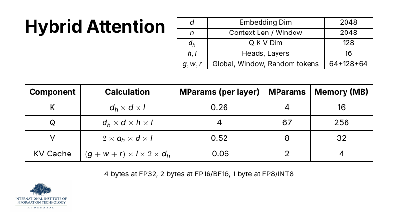
slide 12 · BigBird memory table
On the slide
Reference model again, with the row that identifies the three budgets: g = 64 globals, w = 128 window, r = 64 randoms. KV cache is now
,
a slightly bigger budget than plain sliding, but still constant in n.
Why the cache doesn't blow up
Because every one of g, w, r is a small fixed number, their sum is a small fixed number. Doubling the sequence length doesn't change any of them. That is exactly the property you buy with any of the sparse families.
Slide 13 / 21
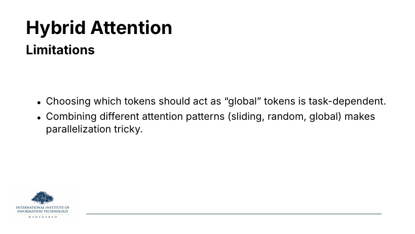
slide 13 · BigBird limitations
On the slide
Two honest problems with BigBird.
The idea behind each
First, global tokens are task-dependent. For a QA task the question tokens are natural globals. For a coding task, maybe the function signature. For plain generation, there's no obvious answer, and picking the wrong ones wastes the strongest slot in your mask.
Second, parallelisation is fiddly. Windowed attention on its own is a clean band-matrix operation the GPU loves. Add scattered globals and random links and you get exactly the non-contiguous memory access problem from slide 10: mask kernels get complicated, and squeezing the last 2× out of them requires the kind of custom CUDA that few teams write.
§5Linear attention: rewrite the algebra
Everything up to here has been a game with masks: skip cells,
rearrange them, choose them, but still compute the surviving cells
the standard way. Linear attention gives up on the mask altogether
and attacks the shape of the equation itself. Katharopoulos
et al. (2020) noticed that if the softmax is replaced with
a factorable kernel, the associativity of matrix multiplication
lets you rearrange the product so the n-by-n
matrix never appears.
Slide 14 / 21
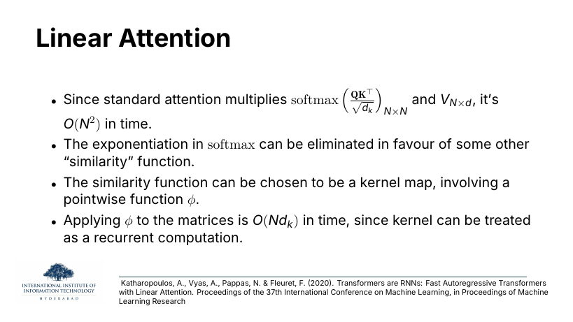
slide 14 · four-bullet setup
On the slide
The pitch, in four bullets:
- Standard attention builds an N×N matrix, so it costs O(N²) time.
- The exponential inside softmax is the villain: it couples every qi to every kj nonlinearly, so the sum cannot be factored.
- Replace exp with a factorable kernel written as
for some feature map φ.
- Then the whole thing can be reorganised as a recurrence, giving
,
linear in the sequence length.
Why softmax is the obstacle
Softmax attention computes
. The exp knots qi and kj together, so you cannot pull qi out of the sum. Replace exp by a bilinear form and suddenly you can.
Slide 15 / 21
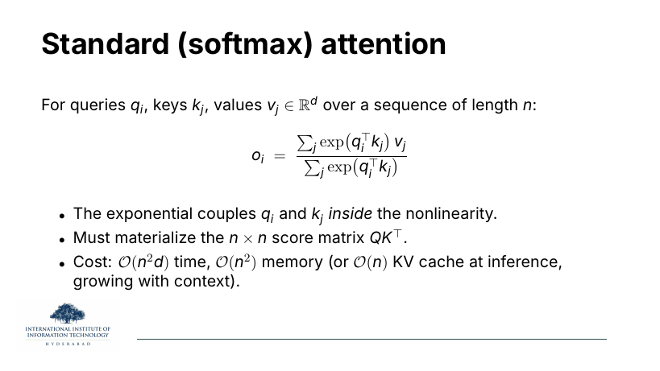
slide 15 · softmax attention, restated
On the slide
The exact softmax attention formula for a single query qi, plus a three-bullet postmortem. exp couples q and k inside the nonlinearity, so the n×n score matrix
has to be materialised. Cost is
time and
memory.
Why this restatement matters
Compare this to slide 16. Both compute an output that is a normalised weighted sum of values. The only difference is what plays the role of the "weight". This slide fixes what we are trying to escape.
Slide 16 / 21
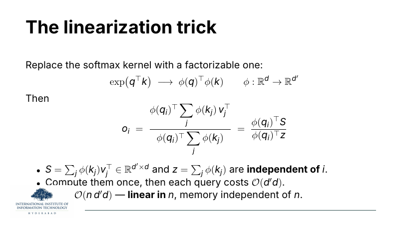
slide 16 · the linearisation trick
On the slide
The one derivation you must remember from this lecture. Replace
with the factorised kernel
.
Now the sum over j factors:
with
,
.
⚙ How it works
Both S and z are sums over j that do not depend on i. Compute them once, in one pass through the sequence, then every query is an O(d′d) contraction with the same S and z. Total: O(n d′d), and (this is the killer property) memory independent of n. The n-by-n matrix never appears anywhere.
Slide 17 / 21
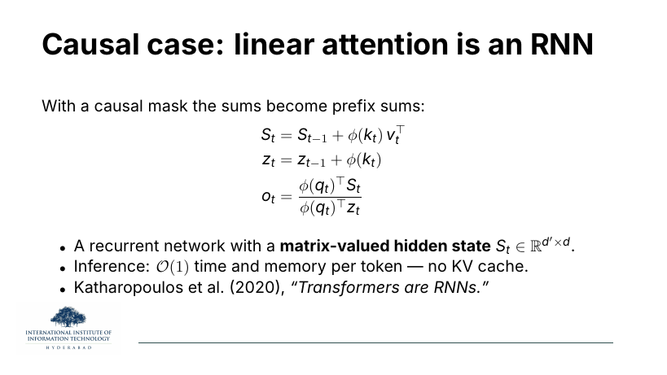
slide 17 · causal case is an RNN
On the slide
In the causal case, where token t may only attend to positions ≤ t, the sums that make up S and z become prefix sums. That means they can be maintained incrementally:
Why the RNN framing is deep
Look at that recurrence. It is a recurrent network: a hidden state
updated at each timestep by a rank-one addition. At inference, each new token costs O(1) time and memory, so no KV cache at all. That is why the paper is called "Transformers are RNNs". The transformer/RNN divide is smaller than you think; linear attention sits exactly on the seam.
Slide 18 / 21
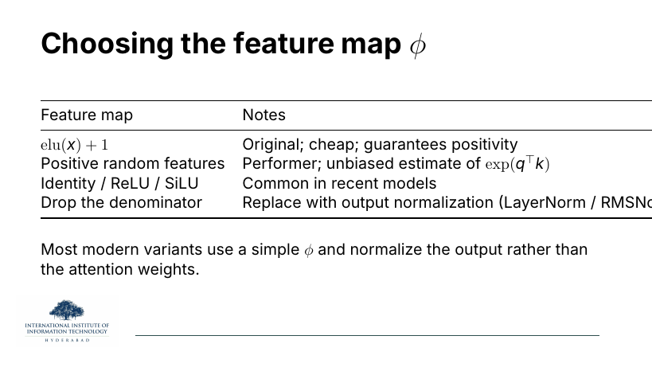
slide 18 · picking φ
On the slide
Four common choices for the feature map φ, each of which trades approximation quality for cost:
- elu(x) + 1. The original Katharopoulos choice; guaranteed positive so the denominator never vanishes.
- Positive random features. Performer (Choromanski et al., 2021); a randomised φ whose expectation exactly equals softmax, so you get an unbiased approximation of full attention.
- Identity, ReLU, SiLU. Pointwise nonlinearities used in recent models. Cheap; empirically fine when combined with output normalisation.
- Drop the denominator. Skip the zt normaliser and let a LayerNorm on the output do the stabilising instead.
Why the choice matters
The kernel is the whole story. It decides how faithfully your linear attention imitates softmax, whether the denominator behaves numerically, and how stable training is. Modern models tend to pick a simple φ and rely on normalisation, rather than chase a fancy approximation of exp.
Slide 19 / 21
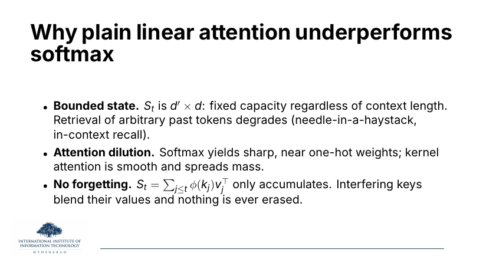
slide 19 · why linear underperforms softmax
On the slide
Three linked reasons that plain linear attention loses accuracy to softmax on long-context and retrieval-heavy tasks.
The idea behind each
- Bounded state. The hidden state
is d′×d. That's fixed. Softmax attention with a growing KV cache can always store one more exact key-value pair; linear attention overwrites. That is exactly why RNN models are bad at needle-in-a-haystack tests: the state can only carry so much.
- Attention dilution. Softmax is a sharpener: because of the exp, it produces near one-hot weights when one key dominates. Kernel-based similarities are much smoother, so mass spreads across many keys and the "selection" behaviour that softmax gives you for free is weakened.
- No forgetting. The recurrence
only ever adds. Two keys with similar φ mash their values together in S, and nothing erases them. Later variants (Mamba, gated linear attention) add a forget gate to fix exactly this.
→ Keep reading
Every one of these limitations is the motivation for a later architecture. Bounded state and no forgetting are what State Space Models (Mamba) try to solve with data-dependent transition matrices. Attention dilution is what hybrid models like Jamba address by keeping some real softmax layers alongside linear ones.
Slide 20 / 21
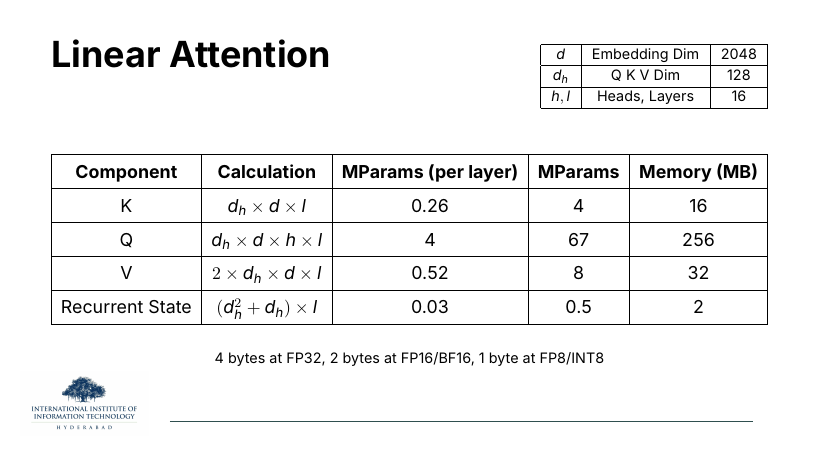
slide 20 · linear memory (no n)
On the slide
The reference table one last time. Notice what's missing from the parameter list at the top right: there is no n. Context length no longer appears in the memory budget, because the state doesn't depend on it.
The KV-cache row is renamed Recurrent State and computed as
.
The
comes from St being a dh×dh matrix (per layer); the extra dh is the normalising vector zt.
Why the row change is the whole story
Look at slide 5 (sliding), 9 (DeepSeek sparse), 12 (BigBird), 20 (linear) side by side. The parameter tables are almost identical. What changes across the four is exactly the last row, the running state. Sliding trims it to w; DeepSeek to k; BigBird to g+w+r; linear replaces it entirely with a fixed matrix. That's the story of the lecture in one row.
Slide 21 / 21
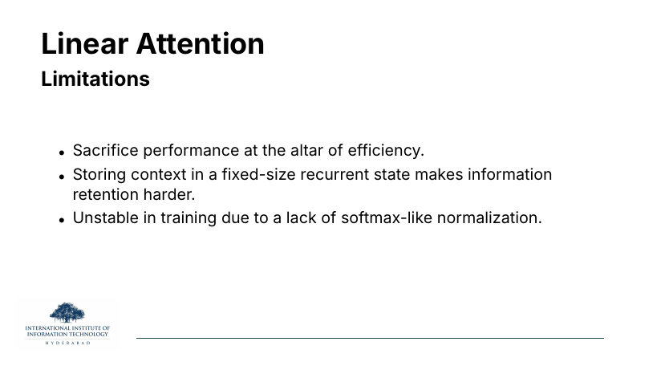
slide 21 · linear limitations
On the slide
The last slide of the lecture. Three honest bullets on why plain linear attention has not (yet) replaced softmax attention in production language models.
The idea behind each
The first bullet, "performance at the altar of efficiency", is the summary of slide 19. On benchmarks, softmax models still win at long-context retrieval and needle-in-a-haystack, though the gap is closing.
The second is the bounded-state problem restated: everything the model knows about the past has to fit in d′×d numbers per layer.
The third is a training-time concern. Without the softmax denominator's normalisation, the running sums St and zt can grow without bound, leading to numerical issues. Modern variants patch this with LayerNorm/RMSNorm on the output (see slide 18's last row), gating, or careful φ choices. You can't just drop softmax and hope for the best.
Zoom out one last time. The lecture surveyed two philosophies for
beating O(n²): skip cells (sliding, sparse,
BigBird) and refactor the equation (linear). Both work,
both cost you something, and both are living research. The next
radical step, dropping attention entirely and replacing it with
a state-space recurrence you can train in parallel, is the topic
of the alternate-architectures block later in the semester.